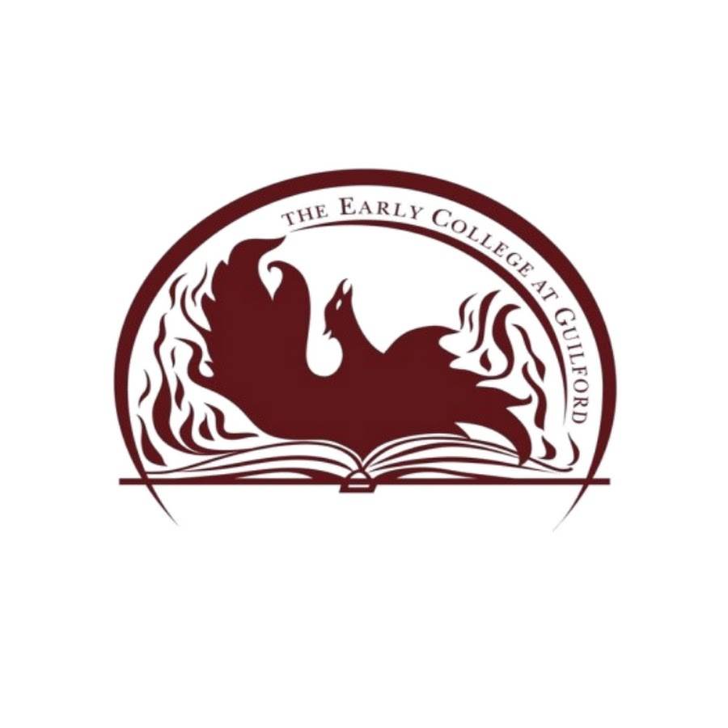

Education
Graduating in May 2021, High school diploma (in progress), the Early College at Guilford GPA: 3.95
Recognized AP Scholar, AP Score of 5 on AP Calculus AB/BC, AP Language and Composition, AP U.S History, and AP Environmental Science
Currently enrolled in college courses at Guilford College, PSAT 1460, SAT 1510

Experience
- Captain of FTC 5795 robotics team (2018 - 2020)
- President of ECG robotics (2020 - present)
- Customer Outreach Representative for Weed Man Inc. (Jan. 2020- Mar. 2020) (Campaign suspended prematurely due to the COVID – 19 outbreak)
- Student Council Representative 10th grade
- Assistant Swim Coach for the Henson Forest Hammerheads (2018 – present)
- SVSM Summer Ventures Research Camp (2019)
- Mentored the Angry Bricks Lego Robotics Team for 2 seasons. Passed the Local/Regional Competition and earned an award in the State Championships.
- FTC Robotics Outreach, ECG Robotics
- Volunteer at Out of the Garden Project (2020 - present)
Return to the home page
List of Achievements, Activities, and Skills